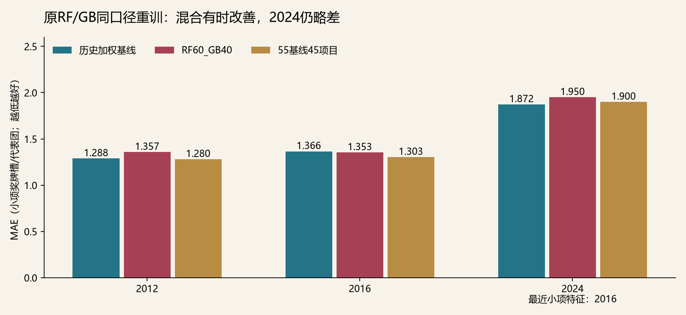

独立岭回归基准未胜过历史份额：公开失败结果
新增独立基准把历史输入、训练目标和输出都统一到小项奖牌槽代理；逐折用更早届次进行内部调参。二次来源情景下，2012、2016、2024三折中，历史份额基线的全体MAE均低于岭回归及固定55/45混合模型。不能据此宣称机器学习提高了预测能力。
先看边界：这不是已发布2028最终集成的重训或完整验证。历史小项代理可能合并同NOC同色多枚；二次来源不是现行IOC逐项认证。2024目标使用既有政府开放数据逐项表，其结构与历史代理仍不完全等价。历史资料含事后追溯修订，缺逐届赛前冻结快照；严格时间切分不等于严格真实时点数据。
简单基线，三折均胜出
全体代表团 MAE · 小项奖牌槽/队，越低越好
历史份额同口径岭回归固定55/45混合
同来源、同候选池、同预测池。2024回放的最近奖牌特征为2016，存在八年间隔；结果仅适用于本独立基准。窄屏可横向查看图表，精确数值见下表。二次来源情景 · 全体MAE（枚/队，越低越好）| 留出届次 | 历史份额 | 岭回归 | 固定混合 |
|---|
| 2012 | 1.341 | 2.031 | 1.486 |
|---|
| 2016 | 1.250 | 2.004 | 1.512 |
|---|
| 2024 | 1.875 | 2.524 | 2.141 |
|---|
2020小项字段泛化，因此不进入奖牌特征；2024回放最近可用奖牌届次为2016，实际是八年间隔，不能当作通常的一届预测。2020参赛身份仍可用于候选代表团筛选。2028新增运动排名、资格、主场加成与最终集成区间覆盖率，均不在本基准验证范围。
展开时间边界、评分分母与来源拆解
候选代表团仅取目标前最近三届的参赛记录；训练与内部验证届次均早于外层留出届次。模型为代表团总量岭回归，输入为前两次可用份额、趋势、近三次均值与波动及年份间隔；正则系数仅在更早届次选择。目标奖牌池由此前三次总量按年度趋势外推，实际池只评分。每折训练来源下的三模型使用相同预测池和评分代表团集合。
全体评分包含赛前候选中的零奖牌代表团，并补入当届未见获奖代表团、预测置零；三折分别为207、208、212队。2016、2024各有一个未见获奖身份，保留误差，不用赛后身份映射修补。MAE分母与旧132队回放不同，不能直接横比；同时公开实际至少5枚子集、RMSE与完整逐队误差。
分开三步：A预测对A标签；保持A预测不动、改用B标签评分；再用B历史重新调参训练、对B标签评分。这样区分“改评分标签”和“重新训练”的影响。两套来源中的岭回归和固定混合模型均未在全体MAE上胜过各自基线；这只评价本独立基准，不证明原RF/GB模型必然相同。
下载27行评分 · 完整逐队误差 · 方法与限制 · 补充PDF
原RF/GB有局部收益，但45%权重尚无稳定依据
保留原随机森林280棵、梯度提升220棵及60/40组合，重跑三种口径、三个留出届次。运动员行口径下，55/45混合的全体MAE三折均小幅改善；小项口径下表现不稳定，2024均略差。不同单位的误差不能横比。

小项二次来源 · 全体MAE（仅在同单位内比较）| 届次 | 历史基线 | RF/GB | 55/45混合 |
|---|
| 2012 | 1.288 | 1.357 | 1.280 |
|---|
| 2016 | 1.366 | 1.353 | 1.303 |
|---|
| 2024 | 1.872 | 1.950 | 1.900 |
|---|
看运动员行与原代理：换口径后是否同样成立？
运动员行原口径 · 全体MAE（仅在同单位内比较）| 届次 | 历史基线 | RF/GB | 55/45混合 |
|---|
| 2012 | 3.517 | 3.471 | 3.399 |
|---|
| 2016 | 3.419 | 3.435 | 3.358 |
|---|
| 2024 | 4.053 | 3.908 | 3.978 |
|---|
小项原代理 · 全体MAE（仅在同单位内比较）| 届次 | 历史基线 | RF/GB | 55/45混合 |
|---|
| 2012 | 1.252 | 1.335 | 1.263 |
|---|
| 2016 | 1.368 | 1.335 | 1.293 |
|---|
| 2024 | 1.887 | 1.947 | 1.906 |
|---|
未进入历史特征的项目仍计入实际评分：2016的高尔夫、七人制橄榄球；2024小项分支的霹雳舞、滑板、攀岩和冲浪。2024已建模格覆盖实际小项槽约93.97%，其余没有被删除。所有模型采用相同候选与评分池、相同事前估计总池，并公开零奖牌队与实际至少5单位子集；不得与旧132队评分直接横比。
看前视风险、训练时间与证据边界
正式模型的全时期筛选会把2024的AIN和霹雳舞提前纳入；严格历史筛选则是KUW而非AIN，且不含霹雳舞。仅在2024运动员行诊断中，含目标届筛选的混合MAE为3.961，严格筛选为3.978，存在约0.017行/队的乐观差异。这不是独立因果估计；旧滚动回放本来已按此前数据筛选，不能把所有旧回测都称为相同泄漏。
每折仅用目标前数据选100个代表团及最多45个运动家族，目标届标签在特征面板中强制置零，仅在评分阶段读取。2012只有2008一个训练届次，样本不足以另做可靠内层调参，所以冻结原参数。历史数据仍是事后整理修订版；没有取得逐届真实赛前冻结快照，严格年份切分不等于真实时点验证。
历史小项是同Year、Sport、Event、Medal、NOC去重的奖牌槽代理，同NOC同色多枚可能合并；2024目标来自既有逐项表。全部45个discipline按预设结构映射至运动家族，未依评分调映射。不能可靠匹配的2020小项未进入小项训练；2024小项回放最近奖牌特征为2016，间隔八年。运动员行分支可使用2020，须分开解读。
据此调整正式阅读方式
主阅读使用中性历史加权基准；RF/GB及55/45混合保留为条件情景，不把45%称为最优或经稳定验证的权重，也不在看过这三折后重新搜索一个“最好”的权重。新增运动、主场和资格仍单列情景。最新2028核心已用截至2024数据重训，但并非原完整集成的同构历史验证。
2028新榜沿用既有1120总量作为比较条件，不保证最终官方规模；主阅读无额外主场、排名或资格加成。最近两次可用小项奖牌数据是2024与2016，时间不等距。榜中不附未经校准的80%区间，不将旧集成区间套到新模型。二次来源不是现行IOC逐项核验，555项全项认证缺口没有因此消失。
50行完整评分 · 逐队误差 · 方法与限制 · PDF核验附页